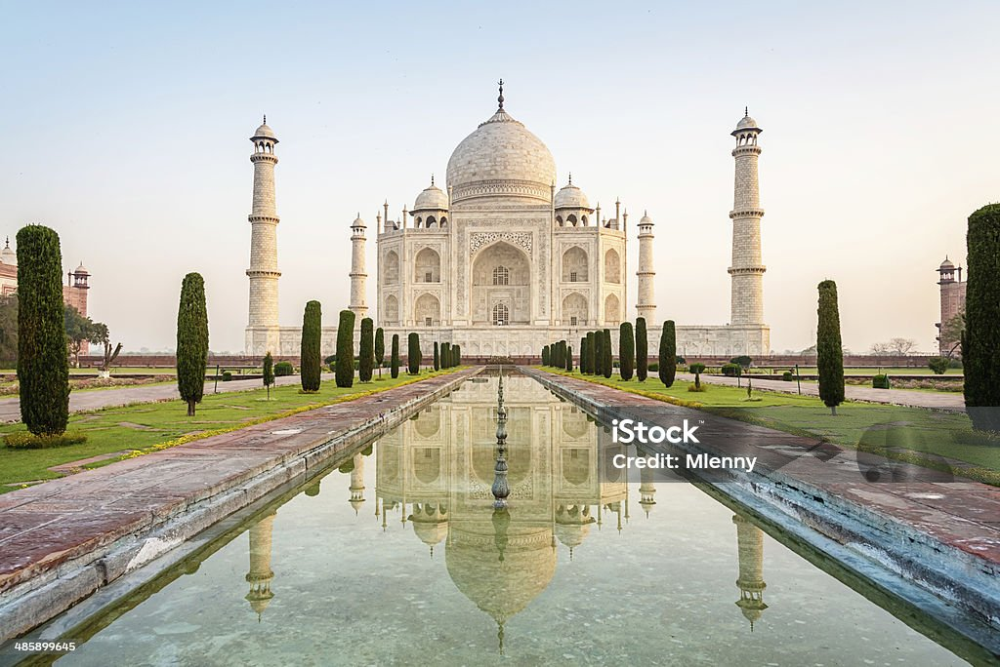
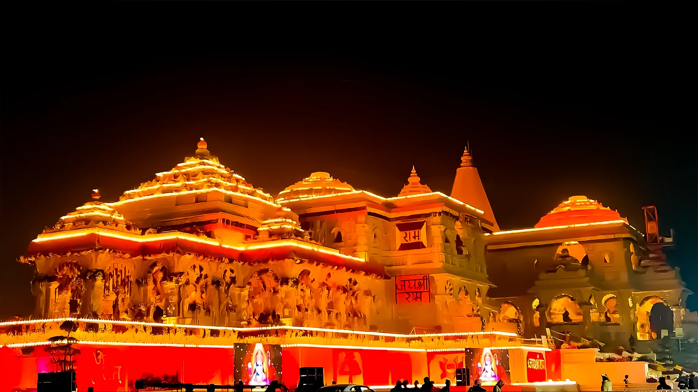
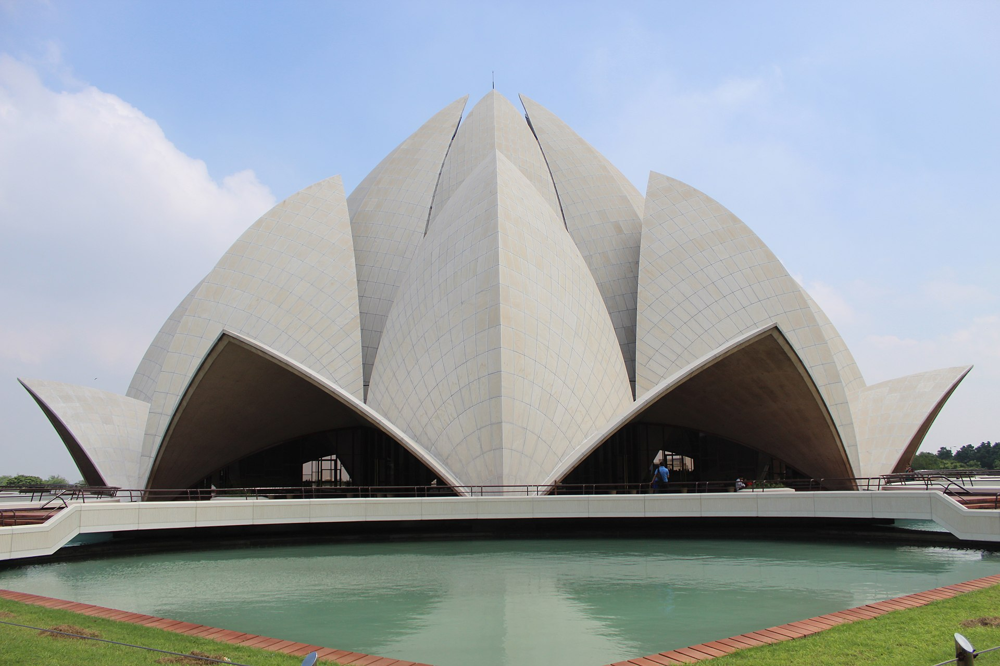
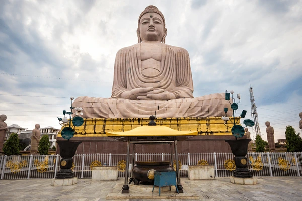

Tourism
India is one of the most popular tourist destinations in Asia and has been successful in attracting domestic and international tourists. India has fascinated many tourists across the globe with her secularism and her culture. The scenic landscape, hill stations, historical sites, architecture and monuments, beaches, and enchanting backwater, places of religious interest make India a preferred destination for tourists from all over the world. Tourism in India has immense potential of developing into a high revenue-generating industry. Better connectivity of transport and communication, improved hospitality services and standard of living and value of money to the tourists from foreign countries have led to an increase in domestic as well as international Tourism.
Top 10 places to Visit in India
- Taj mahal
- Ram mandir
- Rajgir
- Hawa mahal
- Golden Temple
- Agra Fort
- Qutub minar
- bodh gaya
- lotus temple
- Red Fort
Images
  
Indian Culture
The culture of India refers to a collection of minor unique cultures. The culture of India comprises of clothing, festivals, languages, religions, music, dance, architecture, food, and art in India. Most noteworthy, Indian culture has been influenced by several foreign cultures throughout its history.
Culture
Immerse yourself in the diverse culture of India.
Activities
Experience unique activities and festivals.